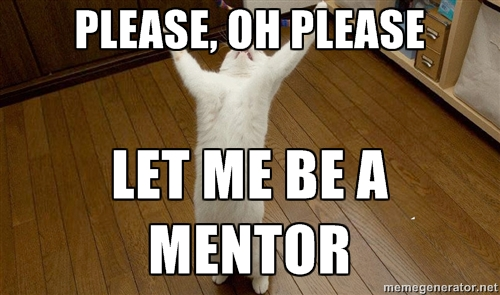

Your browser doesn't support the features required by impress.js, so you are presented with a simplified version of this presentation.
For the best experience please use the latest Chrome, Safari or Firefox browser.
Conquering
Impostor
Syndrome
in the Open Source Community
About Us
-
Heather Rodriguez
Engineer at CivicActions
- Kat Kuhl
Director of Technology at CHIEF
People who feel socially excluded are especially prone to impostor syndrome...
...but it can affect anyone.
So, why is impostor syndrome a problem?
Your fear of being discovered as an impostor
might lead to higher stress and burnout.
You may self-select out of great job opportunities
(and higher salaries).
The community loses diversity.
Give yourself permission to make mistakes.
You learn faster when you admit
what you don't know.
You learn faster when you take risks.
If you aren't making mistakes, it means you aren't out there doing anything.
Neil Gaiman
Get active in the community.
What do mentors do?
- Offer their time.
- Review code/development with individuals one-on-one.
- Listen to presentations and give feedback.
- Give career advice and consultation.

Own your career.
If you want to move up at your current job...
Tell your boss what skills you want to grow.
Learn the responsibilities (& job description)
of the role you want.
Keep a record of your accomplishments
(& take credit for them).
Don’t say:
- "I just Googled it."
- "It's no big deal."
- "She did most of the work."
If you want a new job...
Tap your network.
Don't hesitate to apply
for what you want.
Hewlett Packard report:
- Women wouldn't apply for a job unless they felt they meet 100% of the qualifications.
- Men applied if they felt they meet as little as 60% of them.
Don't spend your time explaining
what you don't know in an interview.
(Other people aren't.)
Know why you're a great hire.
Then tell that story at your interview.